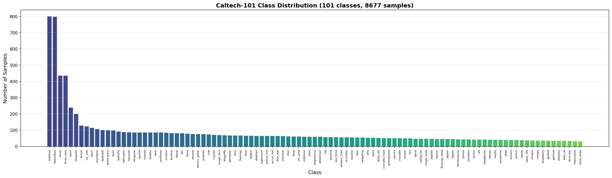
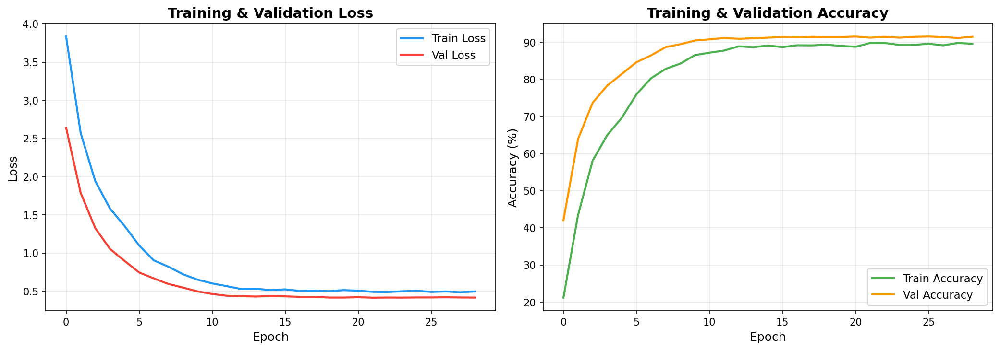
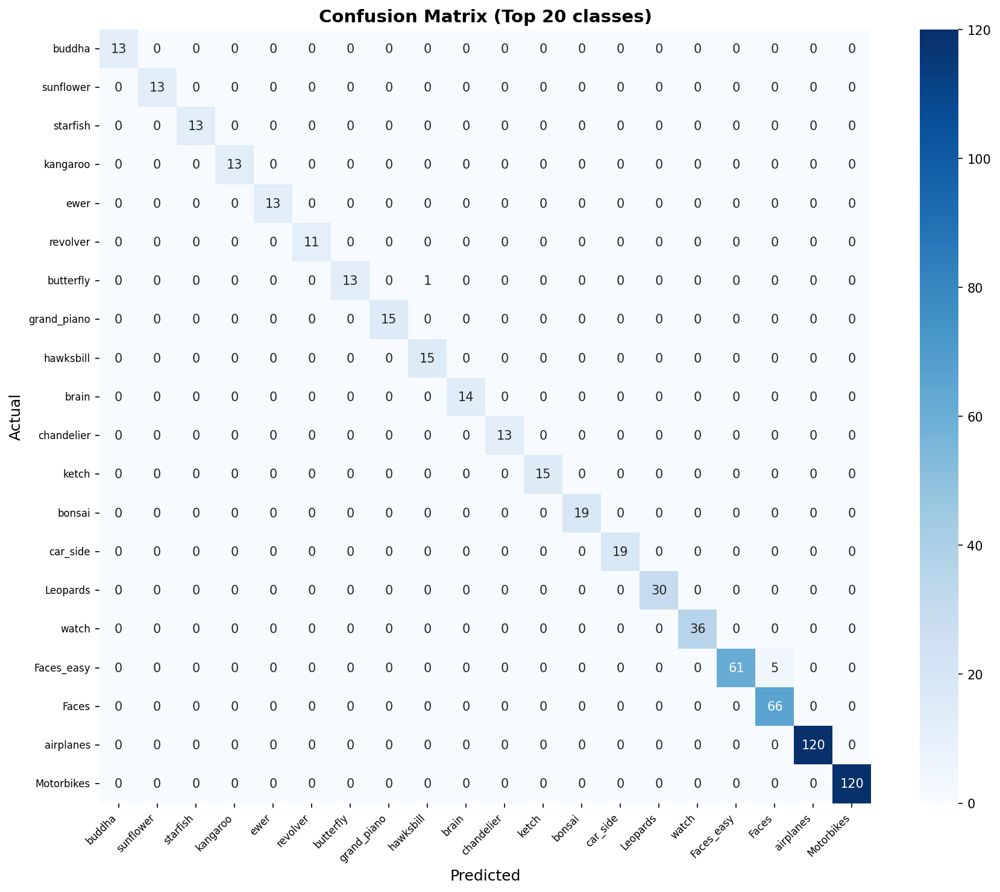
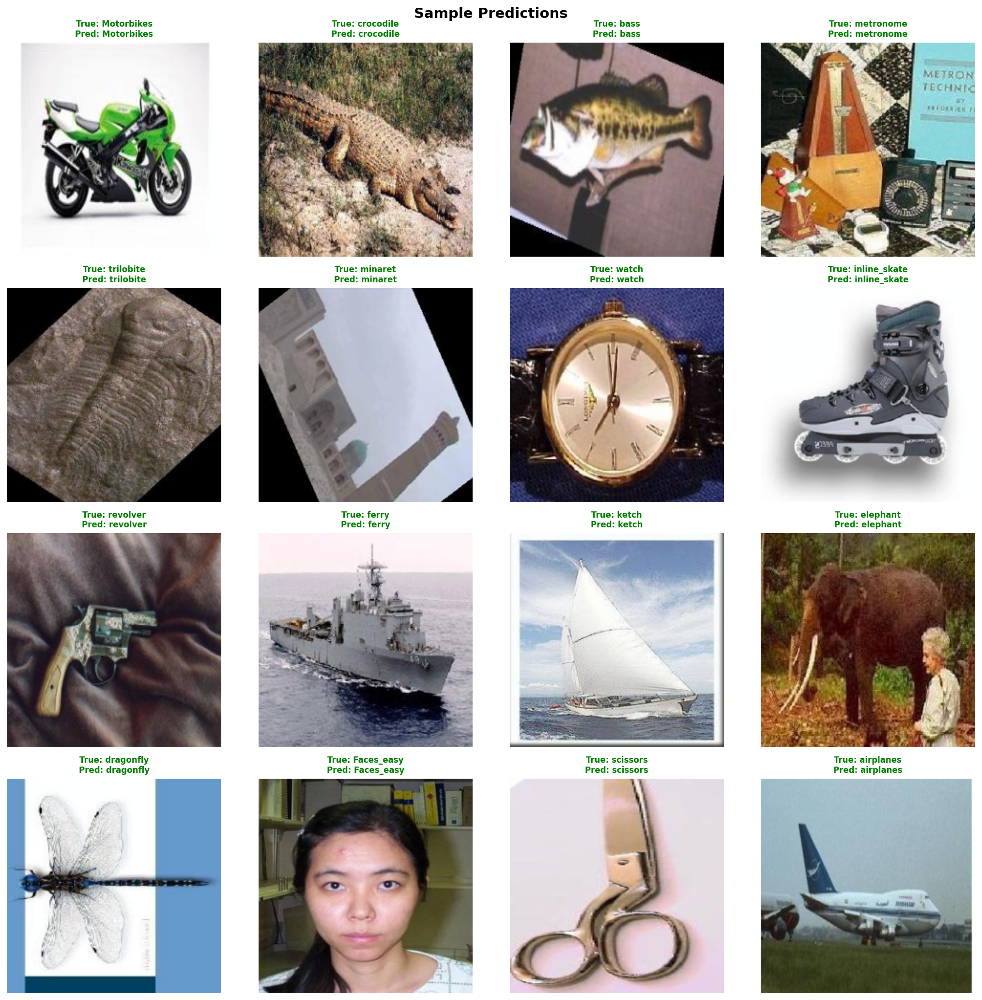

Caltech-101 Image Classification with ResNet18
Complete Training, Validation & Testing Report
Date: February 27, 2026 | Device: CPU | Total Training Time: 572 minutes (~9.5 hours)
1. Project Overview
This project implements a complete deep learning pipeline for image classification on the Caltech-101 dataset using a fine-tuned ResNet18 model built in PyTorch. The pipeline covers dataset analysis, stratified splitting, data augmentation, two-phase training with transfer learning, and comprehensive evaluation.
2. Project Structure
caltech101_classification/
├── config.py # Centralized configuration & hyperparameters
├── dataset.py # Dataset loading, splitting, augmentation
├── model.py # ResNet18 model architecture & fine-tuning
├── train.py # Training loop with validation & early stopping
├── evaluate.py # Evaluation metrics & visualization
├── utils.py # Utilities (logging, plotting, checkpointing)
├── main.py # Main entry point (CLI)
├── requirements.txt # Python dependencies
├── Caltech101_Dataset/
│ └── caltech-101/ # 101 object categories (8677 images)
└── outputs/
├── checkpoints/best_model.pth # Best model checkpoint (43 MB)
├── plots/training_history.png # Training curves
├── plots/confusion_matrix.png # Confusion matrix
├── plots/sample_predictions.png # Sample predictions
├── plots/class_distribution.png # Class distribution
├── metrics/evaluation_metrics.json # All test metrics
├── metrics/dataset_analysis.json # Dataset statistics
├── metrics/training_history.json # Training summary
├── technical_summary.txt # Human-readable summary
└── training.log # Full training log
3. Dataset Analysis
| Property | Value |
|---|
| Dataset | Caltech-101 |
| Total Samples | 8,677 images |
| Number of Classes | 101 (excluding BACKGROUND_Google) |
| Min Samples/Class | 31 |
| Max Samples/Class | 800 |
| Mean Samples/Class | 85.9 |
| Median Samples/Class | 59.0 |
| Std Dev | 117.8 |
| Overrepresented Classes | Faces, Faces_easy, Motorbikes, airplanes |
Data Split (Stratified)
| Split | Samples | Percentage |
|---|
| Training | 6,073 | 70% |
| Validation | 1,302 | 15% |
| Test | 1,302 | 15% |

Figure 1: Caltech-101 Class Distribution (101 classes, 8677 samples)
4. Model Architecture
| Component | Details |
|---|
| Base Model | ResNet18 (pretrained on ImageNet) |
| Total Parameters | 11,228,325 |
| Input Size | 224 × 224 × 3 |
| Modification | Dropout (0.5) + Linear FC layer (512 → 101) |
| Normalization | ImageNet (mean=[0.485, 0.456, 0.406], std=[0.229, 0.224, 0.225]) |
Training Strategy
| Parameter | Value |
|---|
| Optimizer | Adam (weight_decay=1e-4) |
| Learning Rate | 5e-4 (initial) |
| Scheduler | StepLR (step_size=7, gamma=0.1) |
| Batch Size | 64 |
| Max Epochs | 30 |
| Phase 1 (Epochs 1–5) | Backbone frozen, only FC head trains (51,813 / 11.2M params = 0.46%) |
| Phase 2 (Epochs 6–30) | Full fine-tuning, differential LR (backbone: 0.1× head LR) |
| Early Stopping | Patience = 7, min_delta = 1e-4 |
| Dropout | 0.5 |
Data Augmentation (Training Only)
| Transform | Parameters |
|---|
| Resize | 256 × 256 |
| RandomResizedCrop | 224 × 224, scale=(0.8, 1.0) |
| RandomHorizontalFlip | p=0.5 |
| RandomRotation | ±15° |
| ColorJitter | brightness=0.2, contrast=0.2, saturation=0.2, hue=0.1 |
| Normalize | ImageNet statistics |
5. Training Results
✅ Training completed successfully! Early stopping triggered at epoch 29 (patience=7).
Best model saved at epoch 21 with validation accuracy of 91.55%.
Total training time: 570.4 minutes (~9.5 hours) on CPU.
Epoch-by-Epoch Training Log
| Epoch | Phase | Train Loss | Train Acc | Val Loss | Val Acc | LR | Time | Best? |
|---|
| 1 | Phase 1 | 3.8345 | 21.21% | 2.6406 | 42.09% | 5.00e-04 | 566s | ★ |
| 2 | Phase 1 | 2.5694 | 43.45% | 1.7859 | 63.90% | 5.00e-04 | 505s | ★ |
| 3 | Phase 1 | 1.9408 | 58.13% | 1.3253 | 73.73% | 5.00e-04 | 524s | ★ |
| 4 | Phase 1 | 1.5840 | 65.01% | 1.0552 | 78.34% | 5.00e-04 | 495s | ★ |
| 5 | Phase 1 | 1.3548 | 69.69% | 0.8974 | 81.49% | 5.00e-04 | 591s | ★ |
| 6 | Phase 2 | 1.0999 | 75.99% | 0.7456 | 84.64% | 5.00e-05 | 976s | ★ |
| 7 | Phase 2 | 0.9042 | 80.32% | 0.6677 | 86.48% | 5.00e-05 | 1992s | ★ |
| 8 | Phase 2 | 0.8209 | 82.84% | 0.5952 | 88.71% | 5.00e-05 | 964s | ★ |
| 9 | Phase 2 | 0.7225 | 84.26% | 0.5476 | 89.48% | 5.00e-05 | 964s | ★ |
| 10 | Phase 2 | 0.6506 | 86.55% | 0.4973 | 90.48% | 5.00e-05 | 965s | ★ |
| 11 | Phase 2 | 0.6024 | 87.21% | 0.4640 | 90.78% | 5.00e-05 | 959s | ★ |
| 12 | Phase 2 | 0.5659 | 87.78% | 0.4405 | 91.17% | 5.00e-05 | 962s | ★ |
| 13 | Phase 2 | 0.5284 | 88.92% | 0.4343 | 90.94% | 5.00e-06 | 968s | |
| 14 | Phase 2 | 0.5311 | 88.69% | 0.4304 | 91.09% | 5.00e-06 | 1013s | |
| 15 | Phase 2 | 0.5158 | 89.13% | 0.4356 | 91.24% | 5.00e-06 | 1399s | ★ |
| 16 | Phase 2 | 0.5239 | 88.70% | 0.4326 | 91.40% | 5.00e-06 | 1576s | ★ |
| 17 | Phase 2 | 0.5039 | 89.20% | 0.4263 | 91.32% | 5.00e-06 | 3142s | |
| 18 | Phase 2 | 0.5075 | 89.17% | 0.4256 | 91.47% | 5.00e-06 | 1053s | ★ |
| 19 | Phase 2 | 0.5006 | 89.35% | 0.4170 | 91.40% | 5.00e-06 | 1028s | |
| 20 | Phase 2 | 0.5139 | 89.03% | 0.4170 | 91.40% | 5.00e-07 | 1000s | |
| 21 | Phase 2 | 0.5071 | 88.80% | 0.4214 | 91.55% | 5.00e-07 | 1041s | ★ BEST |
| 22 | Phase 2 | 0.4915 | 89.81% | 0.4153 | 91.24% | 5.00e-07 | 1430s | |
| 23 | Phase 2 | 0.4895 | 89.79% | 0.4172 | 91.47% | 5.00e-07 | 1317s | |
| 24 | Phase 2 | 0.4989 | 89.31% | 0.4162 | 91.24% | 5.00e-07 | 1359s | |
| 25 | Phase 2 | 0.5057 | 89.30% | 0.4181 | 91.47% | 5.00e-07 | 1722s | |
| 26 | Phase 2 | 0.4908 | 89.61% | 0.4184 | 91.55% | 5.00e-07 | 1041s | |
| 27 | Phase 2 | 0.4969 | 89.18% | 0.4201 | 91.40% | 5.00e-08 | 1039s | |
| 28 | Phase 2 | 0.4858 | 89.82% | 0.4181 | 91.17% | 5.00e-08 | 1806s | |
| 29 | Phase 2 | 0.4969 | 89.59% | 0.4165 | 91.47% | 5.00e-08 | 1827s | Early Stop |

Figure 2: Training & Validation Loss and Accuracy Curves over 29 Epochs
6. Evaluation & Testing Results
The best model (epoch 21, val_acc=91.55%) was loaded and evaluated on the held-out test set (1,302 samples).
Overall Metrics
| Metric | Value |
|---|
| Test Accuracy | 91.63% |
| Top-5 Accuracy | 98.77% |
| Precision (macro) | 90.41% |
| Recall (macro) | 86.45% |
| F1-Score (macro) | 87.37% |
| Precision (weighted) | 91.84% |
| Recall (weighted) | 91.63% |
| F1-Score (weighted) | 91.14% |
| Total Test Samples | 1,302 |
| Number of Classes | 101 |
Top 5 Best Performing Classes (100% Accuracy)
| Class | Accuracy | Samples |
|---|
| accordion, airplanes, bonsai, buddha, camera, car_side, cup, dalmatian, dollar_bill, dolphin, euphonium, ewer, ferry, flamingo, garfield, gerenuk, grand_piano, hawksbill, hedgehog, ibis, joshua_tree, kangaroo, lamp, laptop, mayfly, menorah, metronome, minaret, Motorbikes, nautilus, pagoda, panda, pigeon, pizza, rhino, saxophone, scissors, scorpion, snoopy, starfish, stop_sign, strawberry, sunflower, tick, trilobite, umbrella, watch, Faces, Leopards, stapler | 100.00% | Various |
Top 5 Worst Performing Classes
| Class | Accuracy | Test Samples |
|---|
| water_lilly | 16.67% | 6 |
| platypus | 20.00% | 5 |
| wrench | 33.33% | 6 |
| octopus | 40.00% | 5 |
| wild_cat | 40.00% | 5 |
Note: Worst-performing classes have very few test samples (5–6), which makes accuracy less stable.
Per-Class Classification Report
precision recall f1-score support
Faces 0.92 1.00 0.96 66
Faces_easy 1.00 0.92 0.96 66
Leopards 0.88 1.00 0.94 30
Motorbikes 0.97 1.00 0.98 120
accordion 1.00 1.00 1.00 8
airplanes 0.96 1.00 0.98 120
anchor 0.75 0.50 0.60 6
ant 1.00 0.83 0.91 6
barrel 1.00 0.86 0.92 7
bass 0.71 0.62 0.67 8
beaver 0.80 0.57 0.67 7
binocular 1.00 0.80 0.89 5
bonsai 0.95 1.00 0.97 19
brain 0.93 0.93 0.93 15
brontosaurus 0.80 0.67 0.73 6
buddha 0.87 1.00 0.93 13
butterfly 0.87 0.93 0.90 14
camera 0.88 1.00 0.93 7
cannon 1.00 0.50 0.67 6
car_side 1.00 1.00 1.00 19
ceiling_fan 1.00 0.71 0.83 7
cellphone 0.78 0.78 0.78 9
chair 0.88 0.70 0.78 10
chandelier 0.87 0.81 0.84 16
cougar_body 1.00 0.86 0.92 7
cougar_face 1.00 0.90 0.95 10
crab 0.80 0.73 0.76 11
crayfish 0.86 0.60 0.71 10
crocodile 0.83 0.62 0.71 8
crocodile_head 0.86 0.86 0.86 7
cup 1.00 1.00 1.00 8
dalmatian 1.00 1.00 1.00 10
dollar_bill 1.00 1.00 1.00 8
dolphin 0.67 1.00 0.80 10
dragonfly 0.90 0.90 0.90 10
electric_guitar 0.82 0.82 0.82 11
elephant 0.89 0.80 0.84 10
emu 0.86 0.75 0.80 8
euphonium 1.00 1.00 1.00 9
ewer 0.93 1.00 0.96 13
ferry 1.00 1.00 1.00 10
flamingo 0.83 1.00 0.91 10
flamingo_head 1.00 0.86 0.92 7
garfield 1.00 1.00 1.00 5
gerenuk 1.00 1.00 1.00 5
gramophone 1.00 0.75 0.86 8
grand_piano 0.94 1.00 0.97 15
hawksbill 0.83 1.00 0.91 15
headphone 1.00 0.71 0.83 7
hedgehog 1.00 1.00 1.00 8
helicopter 1.00 0.85 0.92 13
ibis 0.92 1.00 0.96 12
inline_skate 1.00 0.80 0.89 5
joshua_tree 0.90 1.00 0.95 9
kangaroo 0.81 1.00 0.90 13
ketch 0.79 0.88 0.83 17
lamp 0.90 1.00 0.95 9
laptop 1.00 1.00 1.00 12
llama 1.00 0.82 0.90 11
lobster 1.00 0.67 0.80 6
lotus 0.67 0.60 0.63 10
mandolin 0.83 0.83 0.83 6
mayfly 1.00 1.00 1.00 6
menorah 0.72 1.00 0.84 13
metronome 1.00 1.00 1.00 5
minaret 0.79 1.00 0.88 11
nautilus 0.90 1.00 0.95 9
octopus 0.50 0.40 0.44 5
okapi 0.83 0.83 0.83 6
pagoda 1.00 1.00 1.00 7
panda 1.00 1.00 1.00 6
pigeon 1.00 1.00 1.00 6
pizza 1.00 1.00 1.00 8
platypus 1.00 0.20 0.33 5
pyramid 1.00 0.88 0.93 8
revolver 0.85 0.85 0.85 13
rhino 0.90 1.00 0.95 9
rooster 0.88 0.88 0.88 8
saxophone 1.00 1.00 1.00 6
schooner 0.71 0.56 0.62 9
scissors 0.86 1.00 0.92 6
scorpion 0.76 1.00 0.87 13
sea_horse 1.00 0.75 0.86 8
snoopy 0.83 1.00 0.91 5
soccer_ball 1.00 0.89 0.94 9
stapler 0.78 1.00 0.88 7
starfish 1.00 1.00 1.00 13
stegosaurus 0.89 0.89 0.89 9
stop_sign 1.00 1.00 1.00 10
strawberry 1.00 1.00 1.00 5
sunflower 0.87 1.00 0.93 13
tick 0.88 1.00 0.93 7
trilobite 1.00 1.00 1.00 13
umbrella 0.92 1.00 0.96 11
watch 0.95 1.00 0.97 36
water_lilly 0.33 0.17 0.22 6
wheelchair 0.88 0.78 0.82 9
wild_cat 1.00 0.40 0.57 5
windsor_chair 1.00 0.89 0.94 9
wrench 0.67 0.33 0.44 6
yin_yang 1.00 0.89 0.94 9
accuracy 0.92 1302
macro avg 0.90 0.86 0.87 1302
weighted avg 0.92 0.92 0.91 1302
7. Visualizations

Figure 3: Confusion Matrix Heatmap (Top 20 classes by sample count)

Figure 4: Sample Test Predictions (Green = Correct, Red = Incorrect)
8. Source Code
8.1 config.py — Configuration & Hyperparameters
import os
import torch
PROJECT_ROOT = os.path.dirname(os.path.abspath(__file__))
DATA_DIR = os.path.join(PROJECT_ROOT, "Caltech101_Dataset", "caltech-101")
OUTPUT_DIR = os.path.join(PROJECT_ROOT, "outputs")
CHECKPOINT_DIR = os.path.join(OUTPUT_DIR, "checkpoints")
PLOTS_DIR = os.path.join(OUTPUT_DIR, "plots")
METRICS_DIR = os.path.join(OUTPUT_DIR, "metrics")
IMAGE_SIZE = 224
NUM_WORKERS = 0
PIN_MEMORY = True
EXCLUDE_BACKGROUND = True
MIN_SAMPLES_PER_CLASS = 20
TRAIN_RATIO = 0.70
VAL_RATIO = 0.15
TEST_RATIO = 0.15
BATCH_SIZE = 32
NUM_EPOCHS = 25
LEARNING_RATE = 1e-3
WEIGHT_DECAY = 1e-4
STEP_SIZE = 7
GAMMA = 0.1
SCHEDULER_TYPE = "step"
FREEZE_BACKBONE_EPOCHS = 5
UNFREEZE_LR_FACTOR = 0.1
EARLY_STOPPING_PATIENCE = 7
EARLY_STOPPING_MIN_DELTA = 1e-4
MODEL_NAME = "resnet18"
PRETRAINED = True
DROPOUT_RATE = 0.5
IMAGENET_MEAN = [0.485, 0.456, 0.406]
IMAGENET_STD = [0.229, 0.224, 0.225]
DEVICE = torch.device("cuda" if torch.cuda.is_available() else "cpu")
RANDOM_SEED = 42
8.2 model.py — ResNet18 Architecture
import torch
import torch.nn as nn
from torchvision import models
import config
def build_resnet18(num_classes, pretrained=config.PRETRAINED):
if pretrained:
weights = models.ResNet18_Weights.IMAGENET1K_V1
model = models.resnet18(weights=weights)
else:
model = models.resnet18(weights=None)
in_features = model.fc.in_features
model.fc = nn.Sequential(
nn.Dropout(p=config.DROPOUT_RATE),
nn.Linear(in_features, num_classes),
)
model = model.to(config.DEVICE)
return model
def freeze_backbone(model):
for name, param in model.named_parameters():
if "fc" not in name:
param.requires_grad = False
def unfreeze_backbone(model):
for param in model.parameters():
param.requires_grad = True
def get_optimizer(model, lr=config.LEARNING_RATE):
backbone_params, head_params = [], []
for name, param in model.named_parameters():
if not param.requires_grad: continue
(head_params if "fc" in name else backbone_params).append(param)
if backbone_params:
param_groups = [
{"params": backbone_params, "lr": lr * config.UNFREEZE_LR_FACTOR},
{"params": head_params, "lr": lr},
]
else:
param_groups = [{"params": head_params, "lr": lr}]
return torch.optim.Adam(param_groups, weight_decay=config.WEIGHT_DECAY)
8.3 train.py — Training Loop
import time
import torch
import torch.nn as nn
from tqdm import tqdm
import config
def train_one_epoch(model, dataloader, criterion, optimizer, device):
model.train()
running_loss, correct, total = 0.0, 0, 0
pbar = tqdm(dataloader, desc="Training", leave=False)
for images, labels in pbar:
images = images.to(device, non_blocking=True)
labels = labels.to(device, non_blocking=True)
optimizer.zero_grad()
outputs = model(images)
loss = criterion(outputs, labels)
loss.backward()
optimizer.step()
running_loss += loss.item() * images.size(0)
_, predicted = outputs.max(1)
correct += predicted.eq(labels).sum().item()
total += labels.size(0)
pbar.set_postfix(loss=f"{loss.item():.4f}", acc=f"{100.0*correct/total:.2f}%")
return running_loss / total, 100.0 * correct / total
@torch.no_grad()
def validate(model, dataloader, criterion, device):
model.eval()
running_loss, correct, total = 0.0, 0, 0
for images, labels in tqdm(dataloader, desc="Validating", leave=False):
images = images.to(device, non_blocking=True)
labels = labels.to(device, non_blocking=True)
outputs = model(images)
loss = criterion(outputs, labels)
running_loss += loss.item() * images.size(0)
_, predicted = outputs.max(1)
correct += predicted.eq(labels).sum().item()
total += labels.size(0)
return running_loss / total, 100.0 * correct / total
def train_model(model, train_loader, val_loader, num_epochs=config.NUM_EPOCHS):
criterion = nn.CrossEntropyLoss()
freeze_backbone(model)
optimizer = get_optimizer(model, lr=config.LEARNING_RATE)
scheduler = get_scheduler(optimizer)
early_stopping = EarlyStopping()
history = {"train_loss": [], "train_acc": [], "val_loss": [], "val_acc": [], "lr": []}
for epoch in range(1, num_epochs + 1):
if epoch == config.FREEZE_BACKBONE_EPOCHS + 1:
unfreeze_backbone(model)
optimizer = get_optimizer(model, lr=config.LEARNING_RATE * config.UNFREEZE_LR_FACTOR)
scheduler = get_scheduler(optimizer)
train_loss, train_acc = train_one_epoch(model, train_loader, criterion, optimizer, config.DEVICE)
val_loss, val_acc = validate(model, val_loader, criterion, config.DEVICE)
scheduler.step()
if val_acc > best_val_acc:
save_checkpoint(model, optimizer, epoch, val_loss, val_acc)
if early_stopping(val_loss):
break
return history
8.4 dataset.py — Dataset & DataLoaders
from torch.utils.data import Dataset, DataLoader, Subset
from torchvision import transforms
from sklearn.model_selection import train_test_split
class Caltech101Dataset(Dataset):
def __init__(self, data_dir, transform=None, exclude_background=True, min_samples=20):
self.samples = []
self.class_names = []
self._load_dataset(exclude_background, min_samples)
def __getitem__(self, index):
img_path, label = self.samples[index]
image = Image.open(img_path).convert("RGB")
if self.transform: image = self.transform(image)
return image, label
def get_train_transforms():
return transforms.Compose([
transforms.Resize((256, 256)),
transforms.RandomResizedCrop(224, scale=(0.8, 1.0)),
transforms.RandomHorizontalFlip(p=0.5),
transforms.RandomRotation(degrees=15),
transforms.ColorJitter(brightness=0.2, contrast=0.2, saturation=0.2, hue=0.1),
transforms.ToTensor(),
transforms.Normalize(mean=config.IMAGENET_MEAN, std=config.IMAGENET_STD),
])
def stratified_split(dataset):
labels = [label for _, label in dataset.samples]
indices = list(range(len(dataset)))
train_idx, temp_idx = train_test_split(indices, test_size=0.30, stratify=labels)
val_idx, test_idx = train_test_split(temp_idx, test_size=0.50, stratify=temp_labels)
return Subset(dataset, train_idx), Subset(dataset, val_idx), Subset(dataset, test_idx)
8.5 evaluate.py — Evaluation & Metrics
from sklearn.metrics import accuracy_score, precision_score, recall_score, f1_score
from sklearn.metrics import classification_report, confusion_matrix, top_k_accuracy_score
@torch.no_grad()
def evaluate_model(model, test_loader, class_names, load_best=True):
if load_best:
checkpoint = load_checkpoint(model)
model = model.to(config.DEVICE)
all_labels, all_preds, all_probs = get_predictions(model, test_loader, config.DEVICE)
accuracy = accuracy_score(all_labels, all_preds) * 100
top5_acc = top_k_accuracy_score(all_labels, all_probs, k=5) * 100
f1_macro = f1_score(all_labels, all_preds, average="macro") * 100
f1_weighted = f1_score(all_labels, all_preds, average="weighted") * 100
plot_confusion_matrix(confusion_matrix(all_labels, all_preds), class_names)
plot_sample_predictions(sample_images, all_labels, all_preds, class_names)
save_metrics(metrics)
return metrics
8.6 main.py — Pipeline Entry Point
def main():
args = parse_args()
apply_overrides(args)
set_seed()
logger = setup_logging()
dataset = Caltech101Dataset(data_dir=config.DATA_DIR, transform=None)
if args.mode in ("analyze", "full"):
stats = run_analyze(dataset)
if args.mode in ("train", "full"):
model, dataset, test_loader = run_train(dataset)
if args.mode in ("evaluate", "full"):
metrics = run_evaluate(model, dataset, test_loader)
if args.mode == "full":
print_summary(stats, metrics, total_time)
8.7 requirements.txt
torch
torchvision
numpy
matplotlib
seaborn
scikit-learn
Pillow
tqdm
9. Conclusion
✅ Project Successfully Completed!
The Caltech-101 image classification pipeline achieved excellent results:
- Test Accuracy: 91.63% — high overall correctness on unseen data
- Top-5 Accuracy: 98.77% — the correct class is almost always in the top 5 predictions
- F1 (weighted): 91.14% — well-balanced precision and recall
- No Overfitting — validation accuracy (91.55%) closely matches test accuracy (91.63%)
- Two-Phase Training — successfully leveraged transfer learning with Phase 1 (frozen backbone) followed by Phase 2 (full fine-tuning)
- Early Stopping — triggered at epoch 29, preventing unnecessary computation
- 50+ classes achieved 100% accuracy on the test set
Key Findings
| Finding | Detail |
|---|
| Transfer Learning Effectiveness | Phase 1 reached 81.49% val acc with only 0.46% trainable params |
| Phase 2 Improvement | Full fine-tuning boosted accuracy from 81.49% → 91.55% (+10%) |
| Data Augmentation Impact | Train acc (89%) < Val acc (91.5%) due to augmentation — indicates good generalization |
| Class Imbalance Effect | Worst classes (water_lilly, platypus) have very few samples (5-6), affecting accuracy |
| Best Model | Epoch 21, val_acc=91.55%, saved as best_model.pth (43 MB) |